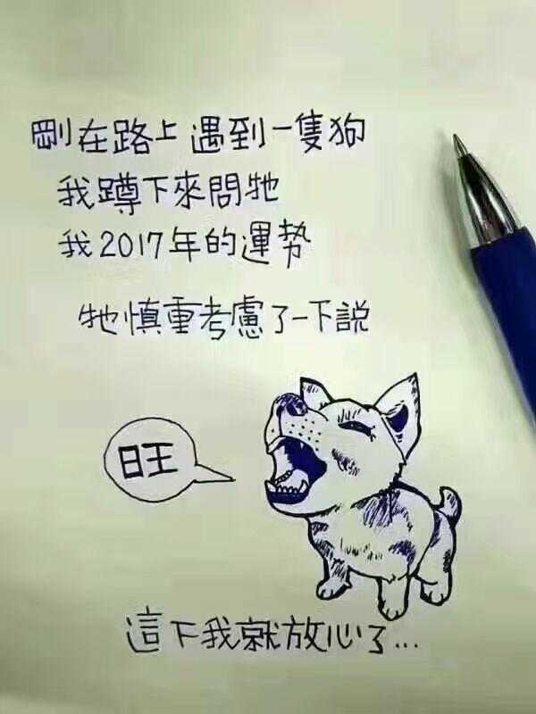

天可补，海可填，南山可移。日月既往，不可复追
回首16年，没有什么值得回味
这一年长膘了
这一年内心都是浮躁的
这一年错过的女孩已经有小孩了
2017要沉下心来做事，也要熟悉这世界的套路
其实有时候我自己都不知道自己该干点什么，那就从读书开始吧
清空2016的负面情绪，迎接全新的自己
先定一个小目标，比方说：先养成个好的作息习惯吧，坚持早起和跑步
认清自己，权衡当下和未来
在今后的计划和人生中，权衡好轻重，活成自己喜欢的样子，以后一定不要活成自己讨厌的样子
格局：
零度格局（盲众）：认为人生苦短，应当及时行乐，追求刺激和内心所向往的一切。零度格局的人，容易被人利用和说服，一般不会思考，对时下的大潮流趋之若鹜。
一度格局（逐利者）：笃信丛林法则，适应者生存，不适者淘汰，以个人利益为人生的最终意义，希望获得越大的利益越好。
二度格局（理念人）：认为真理至美，人生的价值在于思考和追求真善美，内心要保持高度的诚实。
三度格局（至善之人）：在实现个人价值后，认为应当为这个社会做出贡献，减少这个世界的苦难和各种不平等。
先认识自己，去思考站在自己的格局上如何去提升自己的价值，如何去适应社会和影响社会
努力，坚持
逃出思维的束缚，逃出思维的牢笼，逃出一切的局限性。去探索，去尝试，去发现，去试错

人活着，总是要做点事情，不能趴地上等人拖死狗
如果没有信心，那还不如回家养猪
不要对眼前的利益耿耿于怀，放长眼观，回报才能丰厚。人生是持续而反复的构造，不要以预设规则而放弃个人追求
而重新选择，也无需全部推倒重来，你差的，可能只是一点勇气，
——— 今年末 随笔